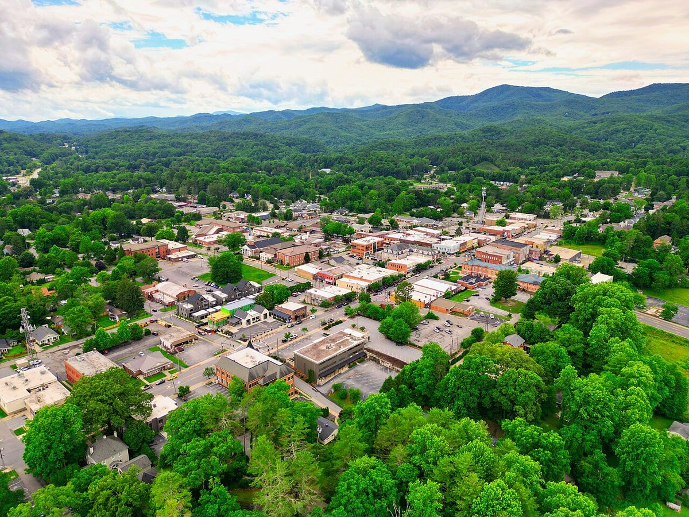

Late morning · Town time
Use Brevard for lunch or a short wander before the waterfall. These are flexible itinerary suggestions, not a timed tour.
NORTH CAROLINA · WATERFALL DAY STOP
A small-town pause and one focused waterfall visit fit well between Greenville and Asheville. Keep the route compact so the stop does not consume the entire day.
THE FEEL OF THE PLACE
Brevard is a small-town pause between the road and the forest: storefront browsing, a soda fountain lunch and the possibility of spotting its famous white squirrels. It works best at strolling speed. Have lunch before the waterfall spur, then decide whether to continue to Asheville early or linger for Monday’s free mountain-music jam at 185 King Street.

Representative photograph from the linked archive; seasons and current conditions will differ.
A SUGGESTED RHYTHM
Use Brevard for lunch or a short wander before the waterfall. These are flexible itinerary suggestions, not a timed tour.
Take the US 276 spur north for the roadside viewing area. Allow 30–45 minutes. The Forest Service lists year-round access and no fee; parking is limited, with a top viewing deck and stairs. There are no restrooms, drinking water or picnic tables at the site.
EAT WELL, KEEP IT SIMPLE
Casual choices for this stop, with restaurant information and independent reviews or local guides to help you choose. Published prices exclude extras unless noted; recheck hours before setting off.
Old-fashioned diner food, burgers, hot dogs and milkshakes at 50 South Broad Street. Its soda-fountain character makes a lunch stop feel more distinctive than roadside fast food.
Budget: Budget-minded diner option; current exact menu prices not verified.
When to go: Official site: seven days a week 11am–4pm. Suitable for Monday lunch, not dinner.
Warm steamed bagel sandwiches at 33 East Main Street. Useful for a fast lunch or a portable meal before the waterfall, with less time commitment than a sit-down restaurant.
Budget: Budget-minded sandwich shop; delivery prices are not treated as in-store menu prices.
When to go: Official Brevard location page: Monday 7am–7pm. Fits lunch or an early casual dinner.
CHECK BEFORE YOU GO
Road and trail conditions can change with weather and repairs. Driving and visit durations are planning allowances, not live navigation. Recheck opening hours and dated events shortly before travel.